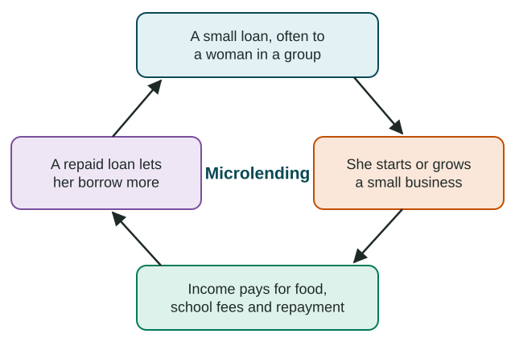

Women and Economic Development
As places develop, more women go to school and take paid work, as in Bangladesh's garment industry, but a gender wage gap and unequal opportunity remain.
Part 1 · Hook
Why this matters
Part 2 · Before you start
What this builds on
Part 3 · Prerequisite check
Quick check before you start
1. What does the Gender Inequality Index measure?
- Gaps between women and men in health, empowerment and paid work
- Average income per person
- Years of schooling for all children
- The share of workers in services
Show the answer
The GII measures gaps between women and men; lower is better.
- Correct: Gaps between women and men in health, empowerment and paid work:
- Average income per person:
- Years of schooling for all children:
- The share of workers in services:
2. In Unit 2, how does more schooling for girls usually affect fertility?
- It usually lowers fertility
- It usually raises fertility
- It has no link to fertility
- It stops all births
Show the answer
Female education tends to delay marriage and lower fertility.
- Correct: It usually lowers fertility:
- It usually raises fertility:
- It has no link to fertility:
- It stops all births:
Part 4 · See it
See it first

Part 5 · Step by step
How it works, step by step
- More girls finish school and fertility fallsmore women can take paid work outside the home
- Factory and service jobs grow, as in Bangladesh's garment industrywomen gain income, but often at low pay and with risks
- Women are fewer among managers and do more unpaid care worka gender wage gap remains, even in rich countries
- Banks refuse loans to people without land or savingsmicrolending offers small loans, often to women in groups, for small businesses
Part 6 · Key ideas
Key ideas
- With development, more women go to school, have fewer children and take paid work, often in factories and services.
- More work is not equal work: the gender wage gap (women's pay compared with men's) appears in most countries with data.
- Women do most unpaid care work, which GDP leaves out.
- Microlending makes very small loans, often to women in groups, to start small businesses: it can raise income and schooling, but it can also bring debt.
- Policy matters: Iceland's equal-pay law (2017) and Rwanda's majority of women in parliament (since 2008).
Part 7 · Misconception
A common mistake
The wrong idea: Once women take paid jobs, women and men are economically equal.
What actually happens: More paid work often comes with a gender wage gap, fewer women in senior roles and a double load of unpaid care work. Equal opportunity takes more than jobs.
Part 8 · Check yourself
Check yourself
Exam-style questions. Anything you miss goes into your review queue.
Text
A village lending group reports (invented passage for practice)
From the 2026 yearly note of the Lake District Women's Savings Group, an invented lending group in Country A.
Our group lends small sums, most under 200 dollars, to women who meet each week in circles of five. No one needs land or a building as security: the circle stands behind each loan. This year 118 of our 120 borrowers repaid on time. Most bought goats, sewing machines or stock for small shops. Members tell us they now pay school fees for their daughters. Two members had to borrow from a moneylender to repay us after their shops failed, and many members sell the same goods at the same market.
1. What does the passage describe?
- A trading partnership between nearby villages and towns
- Microlending: small loans to women
- A government tax on small shops
- A factory that hires women in the Lake District
Show the answer
Small loans without land as security, made mostly to women for small businesses, are microlending.
- A trading partnership between nearby villages and towns: The passage is about small loans to women, not trade between villages.
- Correct: Microlending: small loans to women: Right: small loans without the usual bank security, mostly to women, to start small businesses.
- A government tax on small shops: Nothing in the passage is a tax; it describes loans.
- A factory that hires women in the Lake District: The women run their own small businesses; no factory is described.
2. According to the passage, why does the group lend in circles of five?
- The circle backs each loan, not land
- The law in Country A allows loans in fives
- Circles borrow more
- Each woman is required to run the same shop as the others
Show the answer
Group lending replaces land or buildings as security: the circle backs each member, so repayment stays high.
- Correct: The circle backs each loan, not land: Right: members support each other and feel responsible to the group, which keeps repayment high.
- The law in Country A allows loans in fives: The passage gives no such law; the circle replaces land as security.
- Circles borrow more: The loans stay small, under 200 dollars.
- Each woman is required to run the same shop as the others: The passage notes members sell the same goods as a problem, not a rule.
3. Based on the passage, which outcome is most likely for the members' daughters?
- They leave school earlier to run the family shop
- They move abroad
- They stay in school longer
- They become moneylenders to the group
Show the answer
Women who control income tend to spend it on food, health and schooling, so girls' schooling is a likely gain.
- They leave school earlier to run the family shop: Members report paying school fees, so daughters are more likely to stay in school.
- They move abroad: Nothing suggests migration; the loans are small and mostly repaid.
- Correct: They stay in school longer: Right: income a woman controls is often spent on her children's schooling.
- They become moneylenders to the group: The passage gives no sign of this.
4. Which detail in the passage shows a limitation of microlending?
- 118 of 120 borrowers repaid on time
- Members now pay school fees for their daughters
- Loans need no land or building as security
- Two borrowed elsewhere to repay
Show the answer
Failed businesses, debts paid with new debts, and many sellers of the same goods in one market are known limits of microlending.
- 118 of 120 borrowers repaid on time: That is a strength: repayment was high.
- Members now pay school fees for their daughters: That is a benefit, not a limitation.
- Loans need no land or building as security: That opens loans to poor women, a strength.
- Correct: Two borrowed elsewhere to repay: Right: a failed business can leave a debt that drives borrowers into costlier loans.
5. As countries develop, more women usually take paid work outside the home. Which change helps explain this?
- Farm work for women rises as farms use more machines
- More girls finish school and fertility falls
- Unpaid work at home is counted in GDP once a country develops
- Service jobs disappear as factories grow
Show the answer
Female education and falling fertility, plus growing factory and service jobs, draw more women into paid work.
- Farm work for women rises as farms use more machines: Machines reduce farm labor; they do not raise it.
- Correct: More girls finish school and fertility falls: Right: schooling opens jobs, and fewer births mean fewer years of full-time child care.
- Unpaid work at home is counted in GDP once a country develops: Unpaid work is not counted in GDP at any level of development.
- Service jobs disappear as factories grow: Service jobs grow with development, and many employ women.
6. Put the steps of the microlending cycle in order, starting with the loan.
- A woman receives a small loan
- She starts or grows a small business
- Her business earns income
- She repays and can borrow again
Show the answer
The loan funds a business, the business earns income, and repayment makes a new, often larger, loan possible.
- Correct order: 1. A woman receives a small loan 2. She starts or grows a small business 3. Her business earns income 4. She repays and can borrow again
Part 9 · Summary
Summary
Part 10 · Up next
What comes next
Part 11 · Connections